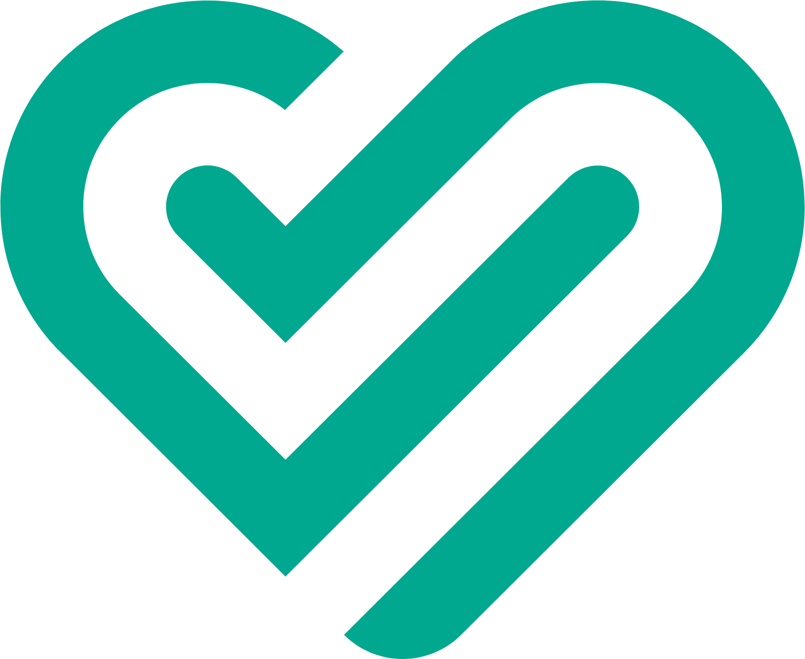
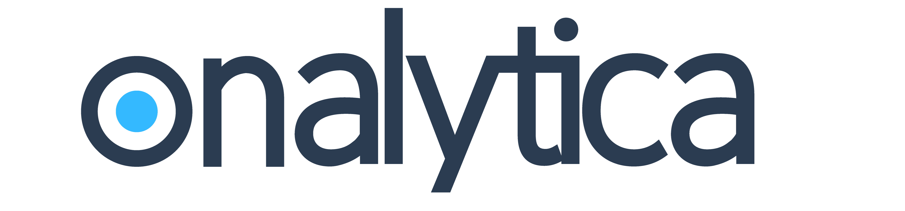
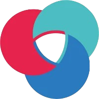
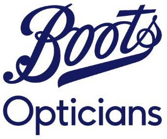

Senior Software Engineer at TrueLayer, with over a decade of experience building secure, scalable production systems across fintech, e-commerce, and tech startups. Self-taught engineer with a background in .NET, cloud platforms, and full-stack development — bringing a pragmatic, test-driven approach to every problem. Previously at Trainline and ASOS, delivering payments, fraud prevention, authentication, and cloud-native microservices used by millions of customers. Trilingual in English, Mandarin, and Cantonese.




Self-taught from the ground up — a biomedical graduate who fell in love with software and never looked back. From a first line of C# to leading platform-wide initiatives, the drive to build and solve has never stopped.